仿真
LIBERO-Plus 92.8%；RoboTwin 90.0/71.9；RoboDojo SR 23.91%。
把未来变化与 4D 几何作为训练老师，用有向 mask 禁止未来输入泄漏；部署只做一次视觉 prefill，再迭代动作。亮点是表示、数据对齐和执行系统的组合，不是一个新增 token 就解释所有提升。
本文 §5.2、§7.1–2 明确把 RoboDojo 纳入四个仿真 benchmark，42 个模拟任务。Table 12 的 23.91% 不是其真机实验。真机是另四个平台的 11 个任务。用户给的宣传标题与这份固定版本论文的证据不一致，不能互相替代。
| 背景 / 失败点 | 视频预测逼真不自动提供控制需要的几何、运动和任务语义；显式未来生成又慢。 |
|---|---|
| 直接依赖 | Wan2.2-TI2V-5B；Fast-WAM训练未来/部署动作的分离；RynnBrain语义；Track4World几何运动；RTC接续动作。 |
| 核心改动 | 变化导向Δ token＋有向mask＋稀疏历史＋训练期4D蒸馏；大规模规范化数据配方。 |
| 最有力证据 | 逐组件消融、数据源对照、推理RTT与两任务真机预训练对照。 |
| 成本 / 限制 | 256×A800约14天预训练；需要对目标本体后训练，不是无机器人数据或零样本跨本体。 |
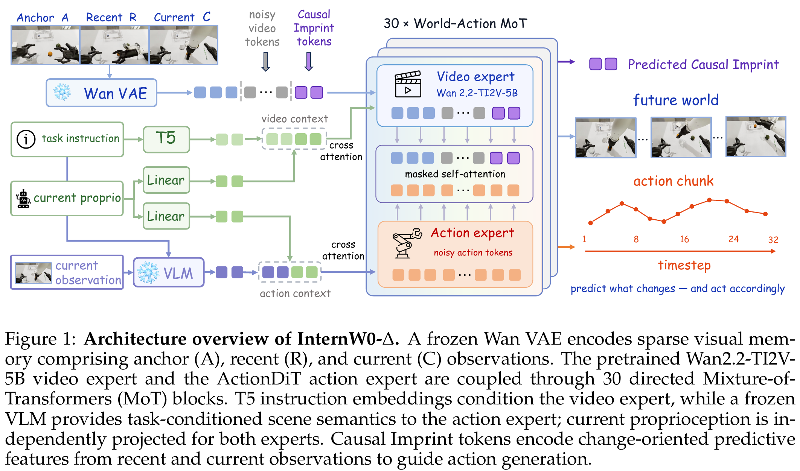
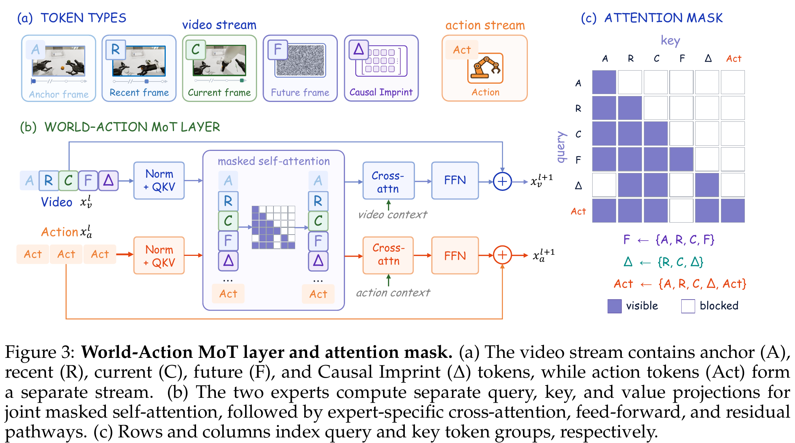
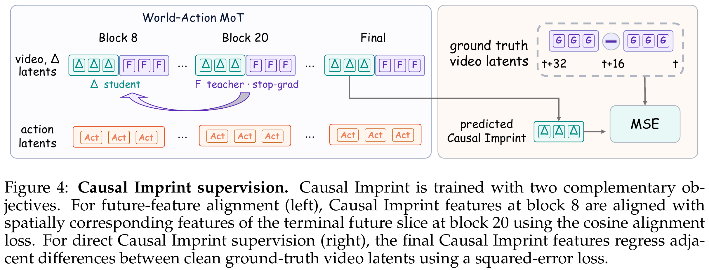
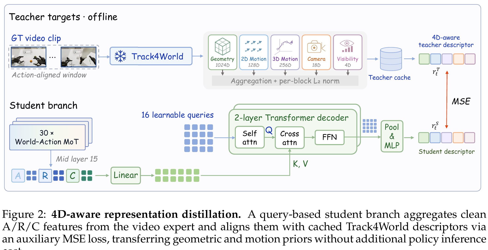
t 是环境时间；σ 是去噪时间；z 是 VAE latent，不是机器人关节；A 是动作矩阵，和图中的 Anchor 字母 A 按上下文区分；Δ 为变化 token；sg 表示目标端停止梯度。下面按依赖合并解释所有编号，数字均为教学例。
Π按本体拼相机画布，m标记缺失相机；s是80D规范状态；Mᴬ屏蔽不存在或补齐的动作维度。两种state投影是不同线性层。T5只读语言，VLM同时看场景，所以“抓红杯”能对应到当前画面。例：单臂夹爪不能被误当成双手所有80维都已观测并有监督。
Hc是历史偏移，设置为32动作步；ρᵥ是视觉采样间隔。ΔZ把各段差分沿时间堆起来，不只终点减起点。例：latent标量轨迹[2,5,4]的目标是[3,−1]，不是[2]。拼QKV后仍按专家拆回；M正是Figure3的有向限制。
y是干净目标，ε是同形噪声。例 y=2、ε=0、σ=.5，输入1，目标速度−2；生成从σ=1走向0，反向积分才能还原。视频分支损失仍训练主干，部署不调用视频生成并不等于训练没用视频。
hΔ回归干净latent差分；中间层对齐终端未来切片的对应空间特征；rS/rT为学生/老师1430维描述符。cos=1时方向对齐损失0，cos=0时损失1；LΔ还约束量值，二者非同义。上式系数取Table4/7；正文超参数段“三项列四值”的句子有笔误，保留该冲突而不猜额外目标。
一次prefill缓存A/R/C/Δ各层K/V；N次动作去噪只重算Act。这个复用成立，因为视觉不读Act、conditioning本轮固定。例N=10时是1次视频专家＋10次动作专家，不是视频专家也跟着跑10次，更不是网络完全只调用1次。
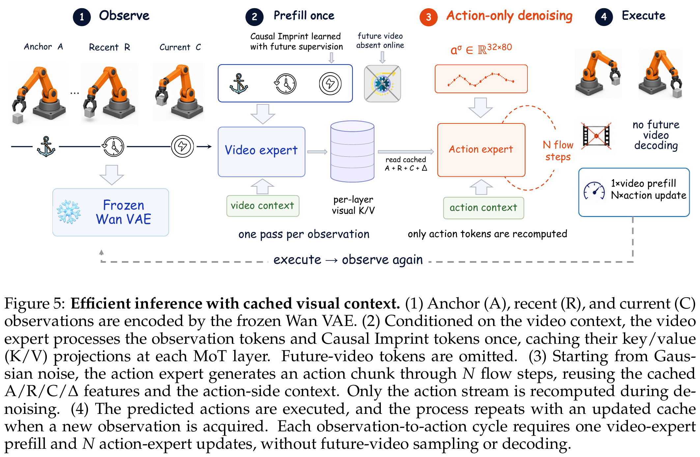
| 类别 | 过滤/转换后小时 | 采样比例 | 动作loss权重 | 含义 |
|---|---|---|---|---|
| Robot | 11,302.20 | 80% | 1.0 | 15个机器人来源，含来源不同的真实/模拟数据；不能全称新采真机小时。 |
| Ego2Robot | 5,633.77 robot-hours | 10% | .1 | 源视频多本体转换后的累计时长。 |
| UMI | 2,075.42 | 8% | .5 | 手持接口采集，含位姿/开合，不等于裸人类视频。 |
| Ego | 4,061.35 | 2% | .1 | EgoDex772.16＋EgoVerse3289.19，动作与速度对齐。 |
库存合计23,072.74小时。类别内按有效起点帧加权并作trajectory balancing。若仅粗略看“采样率×动作权重”，四类为.8/.01/.04/.002，但这不是实际梯度占比，还取决于误差、掩码、模态损失等。不能用小时比直接推断模型学了多少人类知识。
Robot过滤前13,867.71h→11,302.20h；UMI时长下降但episode从250,135变416,053，因为分段。Ego2Robot仅成功覆盖原始1,101.55h、283,450个源episode，最终多本体输出5,633.77h、3,730,513段；robot-hours在2倍慢放前统计。过滤失败也可能来自视觉合成，不只IK不可达。
InternData-A1 3375.51；AgiBot1698.21；Galaxea327.42；RoboMIND625.79；ABC-130K2587.94；RoboSet20.05；MolmoAct2 33.28；RoboCOIN485.77；RDT33.10；RH20T1130.92；ActionNet157.22；Dexora26.30；HABIT122.71；RealSource177.92；RWRL500.06。
训练256×A800、global batch4096、245K steps≈14天；前235K不蒸馏，后10K加入4D，每卡16样本仅1个有老师描述符。后训练各benchmark/本体分别适配。同一预训练起点不代表部署共用同一最终权重。
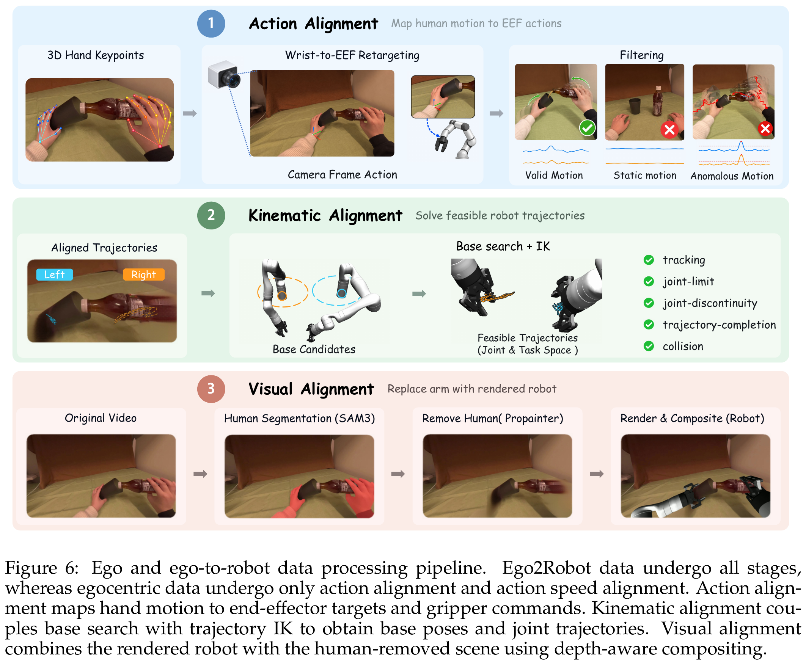
先用相机外参统一坐标，再取位置/旋转变化。指尖相距6cm给g=.5，5cm闭合、7cm全开；这只是夹爪代理，不是精准接触力。相邻位置在各自瞬时相机坐标表达，不能不经讨论就称世界系纯手运动。过滤有效手轨迹需覆盖>70%、长度>1s，去除双手静止、异常速度及相机位移>1m的episode；Ego路径再慢放2倍。
基座外循环先为左右臂各列候选，用粗/中密度轨迹IK筛选，再配对检查间距与交叉碰撞，最后完整逐帧验证，取排序中第一个通过的组合。相比只检查关键帧，能发现中间不可达和关节解跳变。整个步骤是离线生成监督数据，不是部署每帧在线做这套搜索。
q是关节角；eₚ是TCP位置/接近方向误差，J把小关节变化映射到末端变化；阻尼µ降低奇异位形放大。先修主任务，再用其剩余自由度修夹爪接触点/完整朝向，最后拉向连续参考、home、远离限位。
Nₚ是阻尼投影，不是精确零空间投影，次任务仍可能影响主任务。接受解按任务优先级、连续性、轨迹验证决定，而非把几个loss相加取最小就完事。这里没有SONIC低层全身平衡控制，因此不能等同EgoHumanoid的动力学对齐。
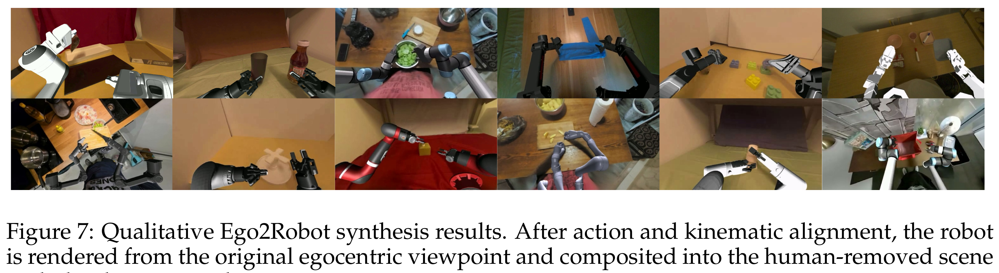
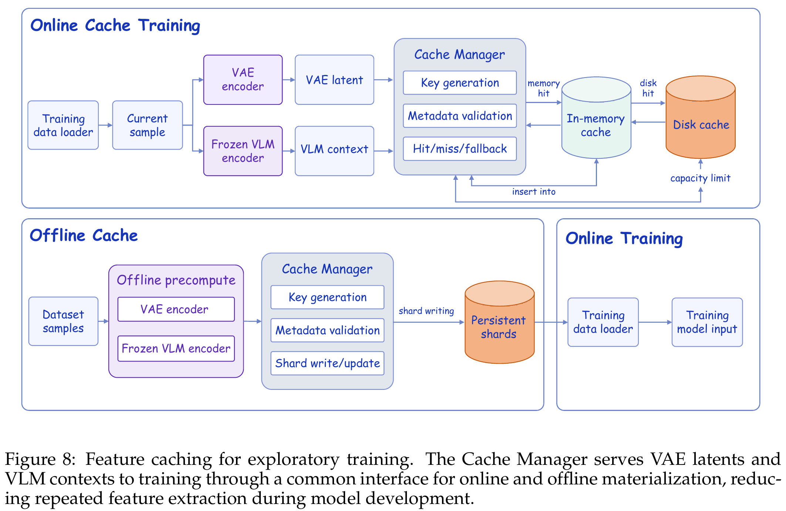
p/s是影响编码的提示/状态，也必须纳入缓存标识。例：同一帧“抓红杯”改成“抓蓝杯”，VLM特征不能继续用同一个key；随机裁剪变化也不应复用旧latent。正文Eq.24是缓存一般形式，不要据此覆盖Eq.7–8描述的具体state接入位置。
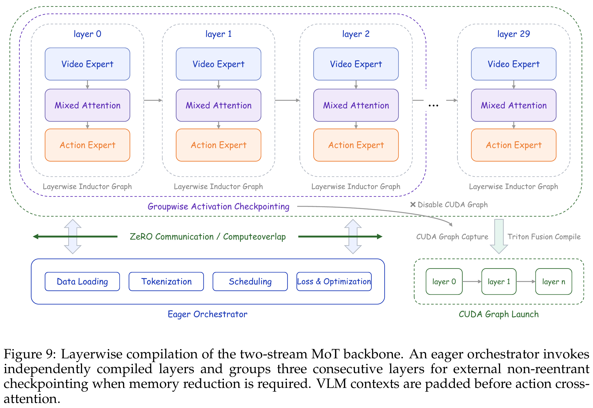
LIBERO/RoboTwin端到端训练吞吐提升3.02×/2.11×是在对应缓存与编译配置下；仅layerwise优化约20–30%。一次预计算代价、缓存磁盘成本并没有消失。
真机控制30Hz，预测32步（约1.067s），执行16步后发异步请求，还剩16步可执行，预算约533ms。训练随机保留0–16步干净动作前缀，只监督噪声后缀；部署前缀来自旧计划而非真值，依据最近延迟估长度并反复clamp。
| 配置 | RTT ms | 含义 |
|---|---|---|
| 标准 | 780.5 | 超过533ms时间窗 |
| 独立无rclpy进程 | 374.1 | 隔离ROS/GIL调度 |
| 特征缓存＋编译 | 249.8 | 减少重复和启动开销 |
| 上下文缓存 | 217.3 | 复用K/V |
| 分组动作层 | 186.2 | 固定shape编译 |
| CUDA Graph replay | 152.8 | 5.11×；不是仅GPU kernel时间 |
RTT包含请求/传输、预处理、归一化、历史/前缀对齐、推理、动作映射与后处理。没有p99延迟和长时间掉帧/安全统计。表中92.78→92.23是另做的LIBERO-Plus成功率，不是该灵巧手RTT测试上的任务成功率。
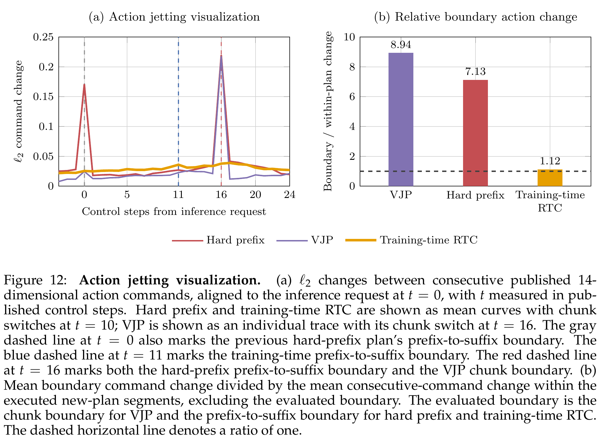
| 基准 | 任务 / 原生动作 | 结果 | 边界 |
|---|---|---|---|
| LIBERO→Plus | 四套训练，Franka 6EEF＋1夹爪 | Plus92.8% | 无Plus适配；不是未学任何机器人示范。 |
| RoboTwin2 | 50任务，14D双臂关节/夹爪 | Clean90.0 / Random71.9 | clean-only后训练10epochs；试验数/种子本文未逐项重述。 |
| EBench | 26任务，双EEF、夹爪、平面底盘 | SR49.2 / Score66.0 | OpenWAM SR49.4略高，但score64.7更低；不能称所有指标第一。 |
| RoboDojo | 42模拟任务，14D关节接口 | SR23.91 / Score30.77 | 不是“真机23.91%”；Memory SR34.0低于DM0.5的47.44。 |
| 变化 | LIBERO-Plus SR | 说明 |
|---|---|---|
| 相机 | 90.6 | 对比表最强 |
| 机器人初始化 | 91.1 | 不是跨机器人本体 |
| 语言 | 92.9 | 任务语义保持的扰动 |
| 光照 | 95.8 | 非所有方法最高 |
| 背景 | 99.4 | 低于Qwen-Context99.9 |
| 噪声 | 94.0 | 低于Qwen-Context97.9 |
| 布局 | 88.4 | 低于Being-H0.7的88.5 |
| RoboTwin联合扰动 | 90→71.9 | 下降18.1pp，保留79.9%；未分开每个扰动。 |
| RoboDojo Gen-Std→Rand | 33.78→11.78 | 下降22pp；Open任务10.17，长程29.33，仍有明显短板。 |
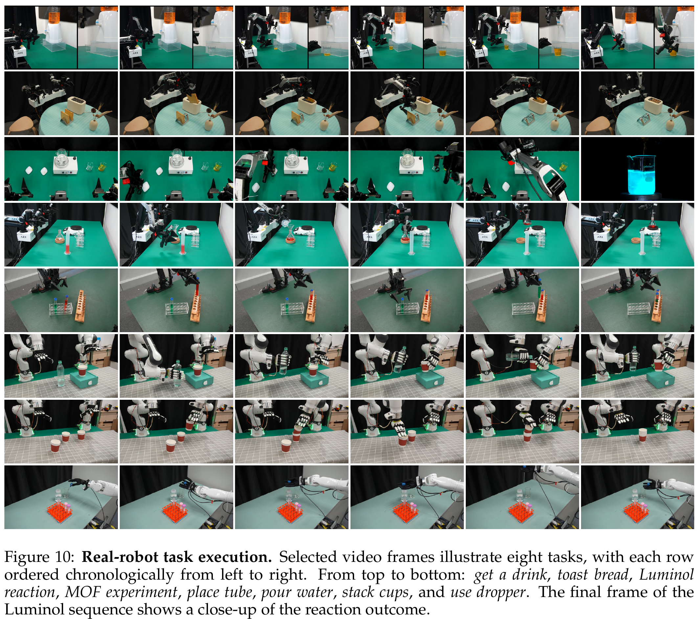
| 平台 / 任务 | 后训练示范 | 量化证据 | 缺失字段 |
|---|---|---|---|
| AC-One / 吐司 | 304条 | 4/20→19/20；95%区间76.4%–99.1% | 多训练种子、失败分类未报告 |
| AC-One / 鲁米诺 | 162条 | 0/20→19/20；76.4%–99.1% | 上述是有无预训练的对照，不是与外部最强模型对照 |
| AC-One / 接饮料、MOF | 137 / 350条 | 定性执行及不同水位展示 | SR、试验总数未报告 |
| Arx5 / 搅拌子、试管 | 202 / 2664条 | 部署展示 | SR未报告 |
| 双Franka+XHand / 倒水、水果、叠杯 | 50 / 48 / 54条 | 分别100epochs后训练 | 不能由两任务95%外推 |
| TianJi+Wuji / 滴管、三明治 | 101 / 101条 | 分别50epochs；RTT测试对应灵巧手部署 | 手20D与规范12D手槽如何完整适配，正文未详解 |
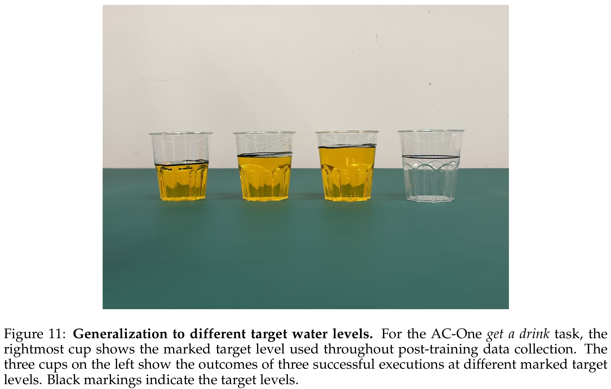
| 配置 | Plus SR | 增加 |
|---|---|---|
| Baseline | 49.59 | — |
| ＋Sparse memory | 53.47 | 3.88pp |
| ＋Qwen3.5-2B | 60.37 | 6.90pp |
| 改RynnBrain1.1-2B | 69.08 | 8.71pp |
| ＋Δ差分 | 70.80 | 1.72pp |
| ＋future feature alignment | 76.45 | 5.65pp |
| ＋4D | 78.37 | 1.92pp |
这组不是最终92.8模型的逐项扣分表，也没有全因子交互实验。4D老师替换为CoWTracker76.15、Pi3X73.63反而低于无老师76.45；Track4World descriptor直接喂动作77.78略低于纯辅助蒸馏78.37。因此“任何3D老师都有效”不成立。
| 来源 | Plus | RoboTwin C2R | 正确对照 |
|---|---|---|---|
| 无预训练 | 78.59 | Joint4.38 / EEF2.80 | 动作表示不同分开比较 |
| Robot | 83.73 | Joint32.34 | 强且一致 |
| Ego2Robot | 81.86 | Joint6.66 | 比Joint基线+2.28pp |
| Ego | 80.45 | EEF3.13 | 比EEF基线+.33pp |
| UMI | 83.24 | EEF13.90 | 比EEF基线+11.10pp |
它支持“本体/动作对齐影响人类数据可用性”，不支持“人类数据永远无用”。这些基准主要夹爪操作，且各来源规模/表示并非一个严格相等的剂量实验；没有系统最优混合率搜索。
§7.5只选择seed0下较差的五个RoboDojo任务，外部Astra给EEF纠偏，平均SR10.8→47.2；这是小范围选择性探索，不是42任务新总分，也不是主模型新增的内生Agent模块。xhigh五条全成与medium的差别样本极小。
| 条目 | 证据 / 尚缺 |
|---|---|
| 时间窗 | 预训练Table4写33 video frames与频率比4；后训练§5.2写33步窗、每4步取图得到9观测帧。不要擅自统一成同一tensor shape，需代码核查。 |
| 80D槽 | Table1每EEF预留9维，正文动作说6维相对运动；剩余槽/有效mask是适配细节，不等于动作有9个物理自由度。 |
| 灵巧手 | 12D规范手槽与Wuji20D控制之间的具体映射未完整给出。 |
| “开源” | 论文使用将发布表述，处理数据受license限制；本页不把所有原始/处理数据都已可下载当事实。 |
| 全身平衡 | 本文人类转换主要机械臂/手；没有EgoHumanoid式完整人形动力学对齐证据。 |
最强结论：在这套训练系统中，未来变化表征与几何蒸馏可提高控制效果，并能通过单向依赖缓存降低在线成本。值得复用的工程点：先把状态/动作语义和时间对齐做对，再谈混合规模；控制连续性要让训练见到已承诺前缀，不能只追求平均推理FPS。
训练时F包含真值未来的加噪信息，部署并没有它；若允许访问就可能条件泄漏，或者部署必须额外生成未来。本文选择训练学生Δ只从观测推断，再让动作读学生，代价是学生可能猜错，收益是部署调用更轻。